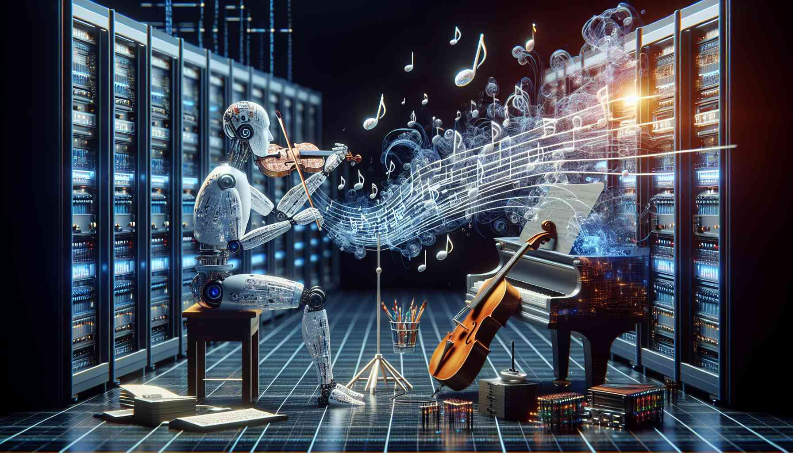

Uvod
Digitalna umetnost je postala neizogiben del sodobne umetniške krajine, ki prinaša inovacije, sveže perspektive ter neskončne možnosti izražanja. S pomočjo najnovejših tehnologij umetniki raziskujejo nove dimenzije kreativnosti, spreminjajoč tradicionalne meje in ustvarjajo umetniška dela, ki so prej veljala za nemogoča
Digitalna Umetnost v Spletu

S sodobnimi tehnologijami umetniki presegajo omejitve klasičnih umetniških medijev. Grafični oblikovalci, ilustratorji in umetniki uporabljajo računalniške programe, virtualno resničnost, in umetno inteligenco za ustvarjanje vizualnih kompozicij, ki presegajo tradicionalne okvire. Digitalno risanje, 3D modeliranje in generativna umetnost omogočajo umetnikom, da svoje ideje prenesejo v virtualni prostor.
Raziskovanje Sodobnih Tehnologij
S pojavom interneta je digitalna umetnost postala globalno dostopna. Umetniki lahko delijo svoja dela prek spletnih platform, socialnih medijev in virtualnih galerij, dosežejo občinstvo po celem svetu. To omogoča ustvarjanje globalne umetniške skupnosti, kjer se ideje in tehnike prenašajo med različnimi kulturami in tradicijami.
Interaktivne Izkušnje za Gledalce

Digitalna umetnost ne le preoblikuje ustvarjalni proces umetnikov, temveč tudi vpliva na izkušnjo gledalcev. Interaktivne instalacije, umetnost v obliki virtualne resničnosti in projektov v realnem času omogočajo občinstvu, da postane aktivni udeleženec v umetniškem delu. Gledalci so vpeti v digitalni svet umetnika, kjer lahko sami sooblikujejo in doživljajo umetniško delo.
Generativna Umetnost in Umetna Inteligenca
Generativna umetnost, ki se napaja s pomočjo algoritmov in umetne inteligence, odpira vrata popolnoma novim načinom ustvarjanja. Umetniki lahko zdaj sodelujejo s programi, ki generirajo avtonomne umetniške izraze, ki presegajo človeško sposobnost. To ustvarja edinstveno sintezo med umetnostjo in tehnologijo, kjer se ustvarjalni proces razvija v simbiozi z računalniškim znanjem.
Zaključek

Digitalna umetnost ne le spreminja način, kako umetniki izražajo svojo kreativnost, temveč tudi razširja obzorja gledalcev in ustvarja most med tradicijo in tehnologijo. S sodobnimi tehnologijami in inovativnimi pristopi digitalna umetnost odpira vrata neskončnim možnostim izražanja, ki širijo horizonte umetniškega sveta.